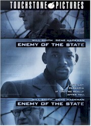
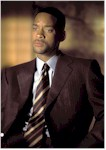
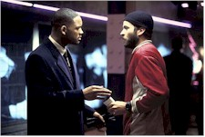
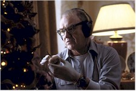

Contents | Features | Reviews | News | Archives | Store |
 |
|
| Movie Credits | Buy It! |
Enemy of the State
Review by Sean Axmaker
Posted 20 November 1998
|  | Directed by Tony Scott Starring
Will Smith, Gene Hackman, Written by David Marconi |
"You’re either very stupid or very smart," remarks Brill (Gene Hackman) twice to Dean. I’ll opt for the former. As portrayed by Smith, this baby-faced golden boy stares down powerful mob boss Pintero (an unbilled Tom Sizemore, almost unrecognizable under rolls of fat) and kicks back with his union clients just like a regular guy in a designer wardrobe ("Send a case of Chianti," he orders a secretary to offer to a hospitalized union official -- that should speed his recovery). He’s supposed to be confident, smart, and very good at what he does; he comes off as cocky, lucky, and thoroughly oblivious to life around him. When his outspoken wife Carla (Regina King) goes off during a news report on the Orwellian titled "Privacy in Communications Act," in reality a proposal to allow the government unfettered access into all electronic communications, Dean could care less. Hell, it sounds like a good idea to him. Do you feel the irony?
The bad guys are the NSA, or rather a renegade official Reynolds (Jon Voight, looking more pasty than ever) looking to further his career by ensuring the passage of said act. When "moderate Republican" Senator Jason Robards refuses to back his play (the liberals and the moderate conservatives are against this -- you know it must be bad), Reynolds does the only thing an ambitious, frustrated official with the most powerful tools of military intelligence and covert strike forces as his disposal could do: he kills him. But oops! he did the deed in a nature preserve where a young researcher, Zavitz (Jason Lee, from Chasing Amy) has set up a motion control camera to record, I don’t know, whatever nature researchers record, and of course manages to capture the killing. With the mob of investigators swarming around the scene, only the NSA agent sees him reload the camera and walk away with the evidence, so Reynolds sets up a "training" exercise and with his Gen-X team of computer nerds and tactical hotshots sends in a way too gung-ho for comfort force to secure the tape. The casting is perfect; you may not know the names but the faces are all too familiar: Jake Busey (Starship Troopers’ super-marine), Jamie Kennedy (the horror-movie buff in both Scream films), Jack Black (Borderick’s jealous buddy in The Cable Guy), and a host of others with solid MTV generation credits. They’re led by a career track, conservative suited agent on the transition between their individualistic shenanigans and the protocol-driven world of Reynolds and the national Security hierarchy, Agent Hicks (Loren Dean), whose face registers the only ambivalence of any NSA character, an element sadly undeveloped by the screenplay. So the video-game generation goes after a flesh and blood target.
This results in my favorite part of the movie: Zavitz, on the run from the ground agents and monitored by high powered satellite (we are continually reminded by an annoying CGI inserts of a satellite constantly reorienting itself to Earth), runs through a posh lingerie store (where all the sales help are wearing nothing but black bras and panties) and smack into Dean, who on a whim has decided to do a little last minute Christmas shopping. Zavitz -- scraggly beard, grungy hooded sweater, sloppy jeans -- looks like he’s begging for change, but Dean recognizes him immediately and hands him his card, completely oblivious to his panting desperation and distracted looks. At this point I had branded Dean as an idiot and found it hard to take him seriously for the rest of the film, not that Smith makes it any easier with his absent performance. Zavitz punishes Dean for his complete lack of sense by dropping his hot package, a video disc copy of the tape, into his shopping bag
Zavitz bites it and Dean becomes the next target of the NSA. They can’t find the missing tape but they can destroy his life. No, it’s not a tantrum as much as a pre-emptive strike, to discredit him before he goes live with the evidence, and with a team of hot-shot twenty-somethings who treat the mission as a live action video game there’s no question of ethics involved. They’re told it’s a training exercise and they’re happy to play along with the ruse without questioning it, even with the death of Zavitz and the desperation of Dean -- it never occurs to them that these are real people who don’t have a history of counterintelligence.
When Dean finds his home vandalized (the cover for the NSA’s surveillance set-up in his home), he blames Pintero and the mob, even as his life starts collapsing around him in chunks so big he’s likely to get hit. His home has become virtual TV studio and he’s a walking radio station. Only one thing can save him now: Gene Hackman, and not a moment too soon. Smith has proven himself a talented actor in Six Degree Of Separation and a charming, amiable star in Independence Day and Men In Black, but the part he plays here is so comic book that all the dynamism and smart talk in the world isn’t going to make it work. He comes off smug and stupid, escaping from one situation after another with luck and energy… mostly luck.
When Hackman’s Brill finally shows up halfway through the film we get a little grounding, his underplayed performance and Joe Average looks suggesting a freelancing American George Smiley. He’s a burned out Harry Caul (for those of you who don’t remember, he’s the paranoid surveillance expert from Coppola’s The Conversation, which this film quotes repeatedly) as former NSA flunkie gone underground, and his quiet authority carries some weight: we believe this guy has the chops and the smarts to take on the NSA. With Hackman on the screen it becomes the young turks and their video game mentality versus the burned out cold warrior who plays the players, not the game. And finally the film, which has been a veritable compendium of high tech clichés and hip-hop stylistics pasted into Tony Scott’s usual hyperactive kinetics, actually engages. The last half hour becomes a satisfying game of "turnabout is fair play," completed in the film’s one truly inspired piece of plotting. It’s almost enough to make you forget the silliness that ran before it.The big problem is everything you have to wade through to reach that last half hour. The credits sequence looks like Koyanisqatsi meets Cops, video news footage slowed, speeded up, blurred, and edited by a blender into a hip-hop video. It’s surveillance as a party video, as if Scott were trying to inject a little funk into what he must think are otherwise dry topics such as government eavesdropping and surveillance, and continues to use the distracting device throughout the film.
This amalgam of The Conversation, Three Days Of The Condor, and The Net talks a lot of techno-babble and pulls out a terrific array of toys, but despite Scott’s slick veneer the splashy action pieces never translate into the kind of roller coaster excitement it should and instead spotlights the horrible inconsistencies: why does Brill help Dean? How can Dean sweet talk Rachel into believing his unbelievable story in less than a minute when all the pleading in the world hasn’t turned her when the evidence didn’t look so bad? If a splinter group of misfits in the NSA can be so efficient, why did it take so long to track the Unabomber? Did I really pay to see this?
Scott pays plenty of lip-service to issues of privacy and power. Like Ed Zwick in The Seige the message is buried under the noise of the film, though with one significant difference. Zwick tries to make his point and falters in clumsy if well meaning sloganeering. Scott hasn’t a point to make; from the very beginning it’s a white hat/black hat conflict. Like at a silent movie you want to hiss Reynolds and his Senate cohort as they speak about the need for National Security and I cheer as Carla railed against the infringement of personal freedoms. I actually heard applause at the conclusion of the screening I attended: Scott and company pander to the audience with a replay of a clip from the film with Larry King proclaiming the dangers of a surveillance society: "Where does it end? You’ve got no right coming into my home!" It’s a cheap ploy and an easy audience pleaser, but likely the only way they’d ever get anyone cheering the film.
There’s a germ of an interesting story buried under the cinematic flash and action movie pyrotechnic, but David Marconi’s script has the feel of a screenplay churned up by a committee. There’s plenty of bang for the buck, but it’s a shame to see a film about the intelligence community executed with so little intelligence.
.
Contents | Features | Reviews | News | Archives | Store
Copyright © 1999 by Nitrate Productions, Inc. All Rights Reserved.